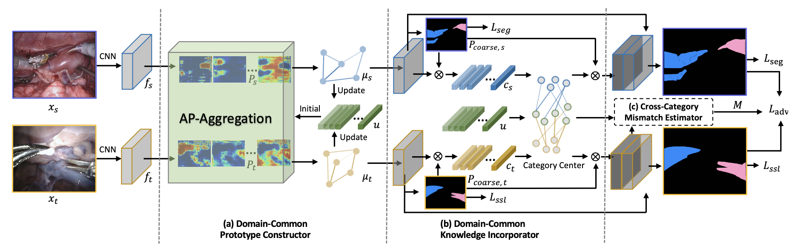
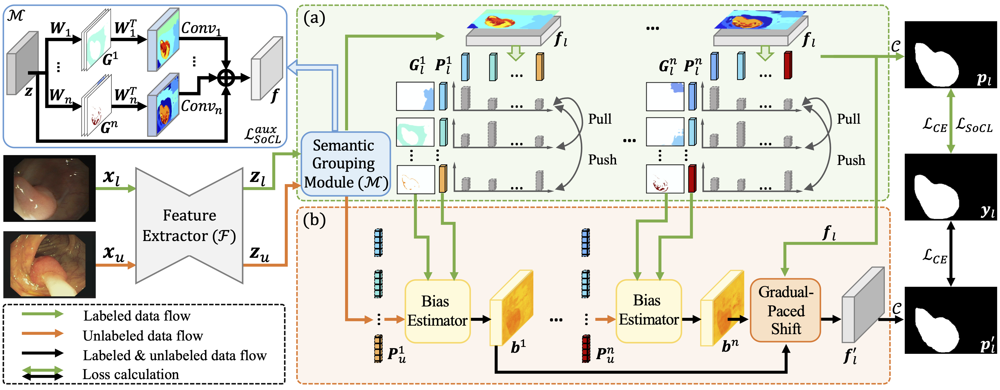
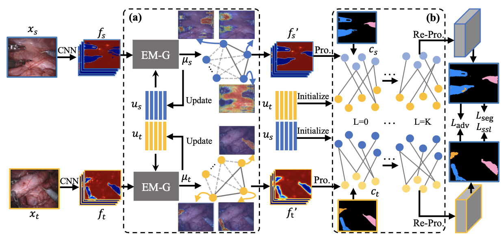
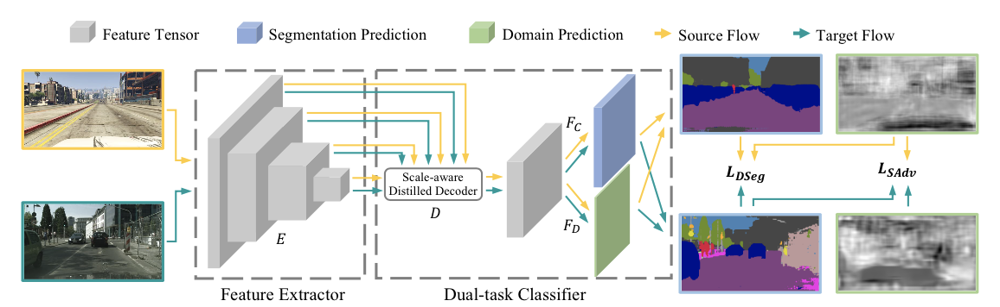
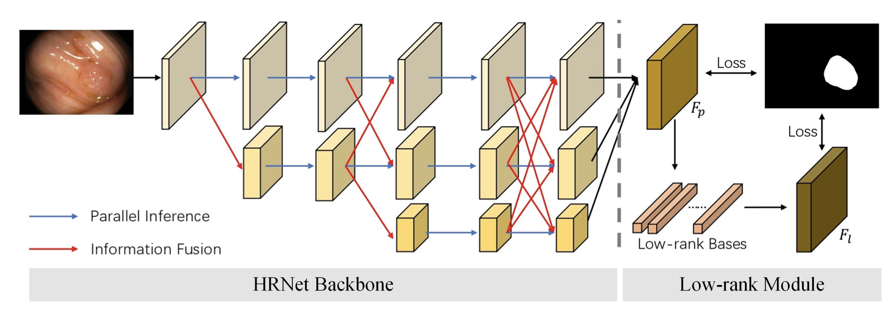

Jie LIUPh.D. Student
G2325, Yeung Kin Man Academic Building, 

|
|
I am currently a second year (2020-2024) Ph.D. student in the Department of Electrical Engineering, City University of Hong Kong (CityU), supervised by Prof. Yixuan Yuan. Before that, I received B. Eng. degree in Electronic Science and Technology from the Zhejiang University(ZJU) in 2020.
I'm currently working on the medical image analysis, with a focus on domain adaptation and graph convolution.
News
[10 / 2021] One paper accepted by IEEE TMI (IF: 10.048)
[09 / 2021] One paper accepted by IEEE TMI (IF: 10.048)
[07 / 2021] I passed my PhD Qualify Exam
[07 / 2021] One paper accepted by IROS 2021
[05 / 2021] One paper early accepted by MICCAI 2021 (top 13% submissions)
[06 / 2020] Outstanding Graduates of Zhejiang University
[06 / 2020] Outstanding Diploma Thesis Award
[01 / 2020] Second Prize of the National Talents Training Base
[10 / 2019] Zhejiang Provincial Government Scholarship
Publications [Google Scholar]
Journal
|  | Graph-based Surgical Instrument Adaptive Segmentation via Domain-Common Knowledge Jie Liu, Xiaoqing Guo, Yixuan Yuan. IEEE Transactions on Medical Imaging (IEEE TMI), 2021 |
|  | Semantic-oriented Labeled-to-unlabeled Distribution Translation for Image Segmentation Xiaoqing Guo, Jie Liu, Yixuan Yuan. IEEE Transactions on Medical Imaging (IEEE TMI), 2021 |
Conference
|  | Prototypical Interaction Graph for Unsupervised Domain Adaptation in Surgical Instrument Segmentation Jie Liu, Xiaoqing Guo, Yixuan Yuan. International Conference on Medical Image Computing and Computer Assisted Intervention (MICCAI), 2021, Strasbourg, France. [Early Accept] |
|  | COINet: Adaptive Segmentation with Co-Interactive Network for Autonomous Driving Jie Liu, Xiaoqing Guo, Baopu Li, Yixuan Yuan. IEEE International Conference on Intelligent Robots and Systems (IROS), 2021, Prague, Czech Republic. |
|  | Joint Polyp Detection and Segmentation with Heterogeneous Endoscopic Data Wuyang Li, Chen Yang, Jie Liu, Xinyu Liu, Xiaoqing Guo, Yixuan Yuan. IEEE International Symposium on Biomedical Imaging Endoscopy Workshop (EndoCV 2021), 2021 |
Honors & Awards
Outstanding Diploma Thesis Award (2020)
Outstanding Graduates of Zhejiang University (2020)
Second Prize of the National Talents Training Base (2020)
Zhejiang Provincial Government Scholarship (2019)
Scholarship for Outstanding Merits and Outstanding Student Leader Awards (2016-2019)